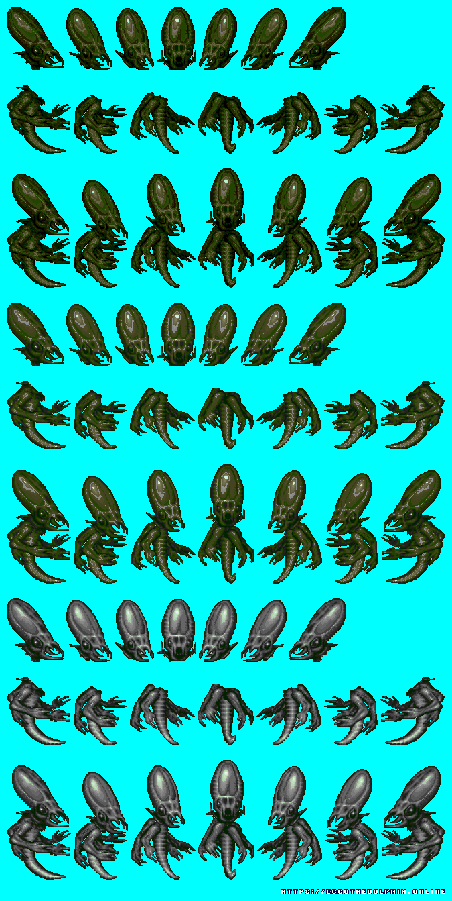
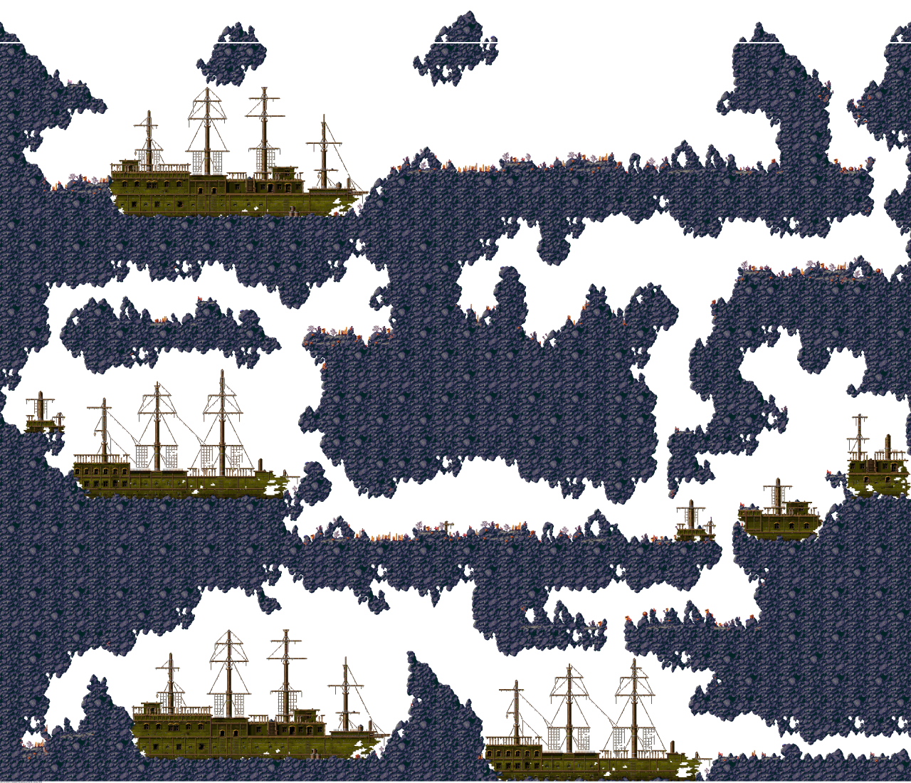
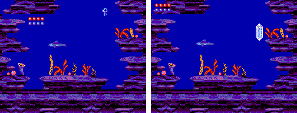
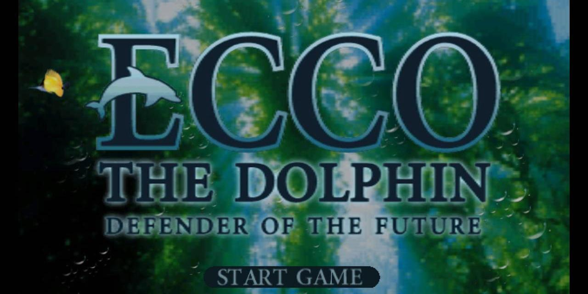
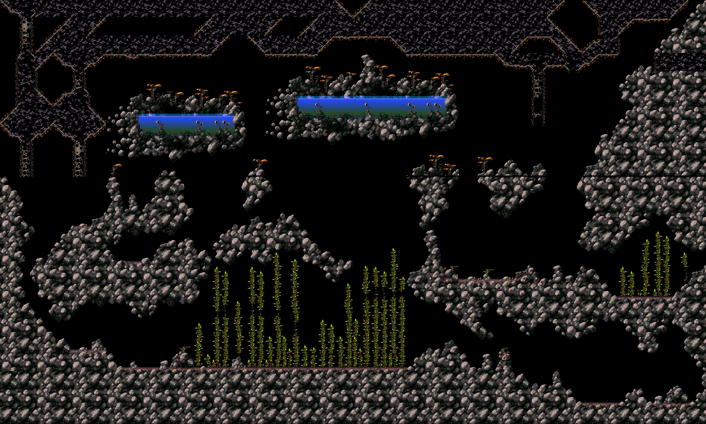

One year ago I made the decision to start a new Ecco the Dolphin community. For the past 16 years the community at large was inactive with new developments popping up once every 4-5 years. I had contacted the leaders - the Old Guard - about a project I was going to begin working on. My plan was to reverse engineer the Mega Drive games and create a new Ecco the Dolphin fan game. I also had gathered rare material and wanted to build a repository.
Unfortunately the Old Guard wanted nothing to do with me. I burned too many bridges 16 years ago and alot of people refused to forgive me for events that transpired nearly a life time ago. The Old Guard had no interest in breathing new life into the community, they were happy with the status quo. After I had approached them I debated if I wanted to do this again.
16 years ago I was Arkonviox, owner of what was once a thriving Ecco the Dolphin community of artists and remixers. My old community was destroyed by my hands as I had failed them as a leader. I had personal demons to deal with which was why I stayed away from this community for so long as I did.
I’m back because I have unfinished business...I never completed my game engine, something I had spent half of my life working on. I never completed my Ecco the Dolphin website, something I put a lot of time into. I was also saddened the community had spent a long period in what one person has described as "The Dark Ages". It was time to bring the community back, and to take it to the next level!
For an entire year I pushed my sanity to the edge, working on a secret project. The goal was to reverse engineer the games and create a large dump of sprites and level maps. I succeeded. I reverse engineered the graphical assets from Ecco the Dolphin, Ecco 2 The Tides of Time, and the high definition sprites from Ecco the Dolphin PC. Today for the first time, I am not only releasing them all to the public, but the tool I used to dump them, Blue Dream!
For those of you who follow me on social media, I spoke about Project Black Omen. The goal was to dump all the graphical assets from the two major Mega Drive games, and sprite assets from Ecco PC. Here they are available for download for the first time!!
 
Blue Dream is a game engine prototype, a graphical library, and extraction tools for the Ecco the Dolphin series. This version is for educational purposes only and lacks commentary and documentation on how to use it. I am releasing it as is and will be updating it and documenting it for those who are interested in using it. The tools work, if you need help understanding it feel free to drop by our discord for support. I will be happy to help you. It’s built in C using C++ only when necessary. The files included are for Visual C++.
Ecco 2 Revision 1 for Master System is a translation and hack of the Brazilian Ecco 2 Tides of Time. It features repairs to some of the games user interface elements and changes to the games story structure. The original version of this game was released on Game Gear and was rushed. This left the games story structure unfinished. Revision 1 fixes these issues. We are also releasing two additional versions of this game that only addresse the broken parts. These two versions are a fixed Portuguese version, and a "Game Gear Translation".

Check it out here: Ecco 2: the Tides of Time Revision 1 for Master System
Comby Laurent recently discovered a very early prototype of Ecco Defender of the Future. My fellow website administrator Moduvator was kind enough to analyze it. The result was a comprehensive article about the prototype documenting the differences and highlights. We are releasing it for the first time to the public!

Check it out here: Ecco Defender of the Future Prototype 11-1999
In 2008 there were two engineers who cracked the level formats for Ecco 1 and 2. They released editors capable of dumping level maps that had long been lost. Jorge and Tails151 were notable members of the community. Although Tails has not reemerged Jorge has! He was kind enough to share these lost tools with us! He is releasing his Ecco 2 sonar and level map extractor as open source!
Dakras, a member of our community was able to uses Jorge's Ecco 2 Editor to dump all the level maps from the prototypes of Ecco 2 known as the Alpha and X11 versions. They are available for download from the links below.

You may have noticed the sites look has been updated. We aren’t finished yet! Over the next few months we will be expanding it with new content! So stay tuned!